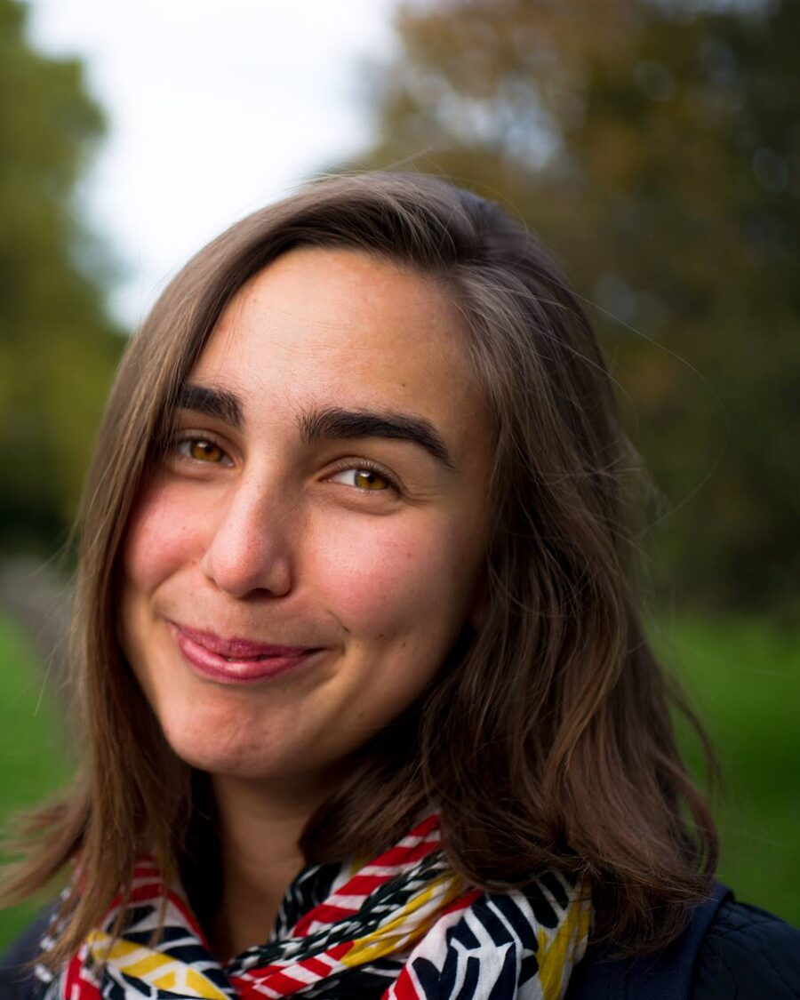

Philosophical Enquiry
Qualified facilitator of communities of philosophical enquiry — structured, open dialogue in which a group thinks carefully together about questions that matter.
Design researcher creating spaces where people can think and make together — and lead together.

Now
Laura has recently joined IVL Swedish Environmental Research Institute, moving over alongside long-time collaborator Nina Božič Yams, who works in IVL’s Transformation area.
Together they continue a shared line of work: how organisations and public institutions can move from hierarchies towards trust, participation and leading together — as part of the wider transition to a sustainable society.
About
“Co-creation transcends methods, requiring relational readiness and sensitivity to how participants engage with and support one another.”On relational sensitivity
Laura Gottlieb is a design researcher in the field of participatory design, bringing its methodologies into the public sector and into the everyday life of organisations.
Her recent work explores how organisations can foster deeper participation and shared agency among employees and citizens through self-leadership and shared leadership. Working with Nina Božič Yams in four years of participatory research with Swedish municipalities and agencies — first at RISE Research Institutes of Sweden — this became the handbook Transforming how we lead together.
With a background in Philosophy and Information Experience Design, Laura’s interdisciplinary research asks how creative practices can support reflection and meaningful dialogue. Their PhD in Innovation and Design at Mälardalen University investigated the role of material artifacts in supporting joint inquiry, and introduced the concept of relational sensitivity: the essential readiness for thinking and making together.
As a qualified facilitator of Philosophical Enquiry and Integral Facilitation, Laura designs and holds spaces for joint inquiry and co-creation, often through artistic and designerly practices. Underneath it all is a simple aim — to contribute to deep, meaningful connection and reflection, and to a relational sensitivity that embraces diverse perspectives and the complexity of human experience.
Laura is also a member of The Posthumanities Hub, the feminist research collaboratory founded at Linköping University.
Research
Participatory design depends on attuning to subtle, complex collaborative dynamics. Laura’s research articulates this attunement through three interwoven perspectives — each one shaping how people come to think and make together.
Noticing one’s own presence, assumptions and responses in a shared process — the inner readiness that collaboration rests on.
Attending to what happens between people: how participants engage with, listen to and support one another.
Recognising how artifacts, materials and the shape of a process open up — or close down — possibilities for joint inquiry.
Practice
Research and facilitation are one practice for Laura. Workshops, conversations and gatherings are designed as places where people can slow down, reflect, and discover things together that none of them would have found alone.
Qualified facilitator of communities of philosophical enquiry — structured, open dialogue in which a group thinks carefully together about questions that matter.
Facilitation that holds the individual and the collective, the inner and the outer — attending to people as whole humans, not just roles in a process.
Collage, cards, movement and ritual. From the Teatime experiments — tableware and procession as prompts for philosophical conversation — to tools for university–society collaboration.
Selected work
A handbook for resilient and sustainable organisations and society — practices, stories and reflections for public sector teams moving towards trust, participation and leading together. Written with Nina Božič Yams and Álvaro Aranda Muñoz, and openly licensed under CC BY 4.0.
Read the web editionPath
University of Southampton
Royal College of Art, London — teatimes as spaces for philosophical inquiry
The Interactive Institute, and Peking Natural Science-art Organization
Mälardalen University — MDH LivingLab, co-production between university and society
Research Institutes of Sweden — self- and shared leadership in the public sector
Swedish Environmental Research Institute — with Nina Božič Yams
Contact
For research collaborations, facilitation, or conversations about participation and leading together.